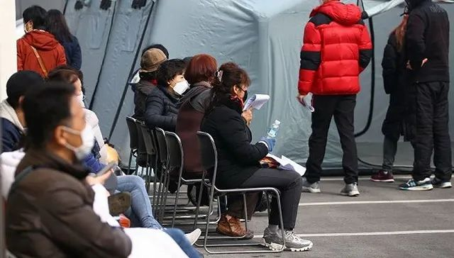

18个0！
原文链接 备份链接 澎湃新闻记者 张家然 2月22日下午，国务院应对新型冠状病毒感染肺炎疫情联防联控机制举行新闻发布会，介绍保障生活必需品市场供应和流通工作情况。 国家卫生健康委新闻发言人米锋介绍说，从数据可以看出，武汉、湖北其他地市，全 …
图片来源：Yonhap
“
韩国的确诊病例总数从2月19日的51人激增至22日的433人，相当于19日的8倍。
”
韩联社消息，韩国中央防疫对策本部22日通报称，截至当天下午4时，韩国国内再新增87例新冠肺炎确诊病例，累计确诊病例达433例。即24小时内，韩国国内共新增229例确诊病例。
从2月20日开始到22日，韩国报告的确诊病例总数连续三天翻番，从2月19日的总计确诊51人，激增至22日的433人，相当于19日总数的8倍。
2月18日，累计31例
2月19日，新增20例，累计51例
2月20日，新增53例，累计104例
2月21日，新增100例，累计204例
2月22日，新增229例，累计433例
在截至22日上午9时新增的142例病例中，有131例来自大邱和庆尚北道地区。有38例与新天地大邱教会有关，92例与发生医院内集体感染的清道大南医院有关。
在截至22日下午4时又新增的87例病例中，有69例来自大邱和庆北地区。有62例与新天地大邱教会有关，3例与清道大南医院有关。这意味着与两者相关的确诊病例现已增至231例和111例。
此外，韩国当天新增1例治愈病例，康复出院人数增至18人。
韩国中央应急处置本部副本部长金刚立22日上午在记者会上表示，政府决定继续将新冠病毒的预警级别维持在第二高的“警戒”级别。
韩国传染病危机预警分为四级，由低到高分别是只在国外发生疫情的“关注”、疫情流入境内的“注意”、在境内有限传播的“警戒”和传播至地区或全国的“严重”。韩国政府1月27日将预警级别提至“警戒”级别。
金刚立表示，最高级别的“严重”级别是在全国范围内出现社区传播现象时采取的防疫机制。目前，国内新冠疫情集中发生在特定地区、特定团体和设施。政府将大邱和庆尚北道地区作为传染病特殊管理地区来管理，在实际工作中采取等同于“严重”级别时的防疫措施。

来源：韩国中央防疫对策本部
截至目前，除确诊患者外，韩国接受新冠病毒检测的人数累计21153人，其中15116人的检测结果呈阴性，其余6037人的结果还未出炉。
未经授权 禁止转载

原文链接 备份链接 澎湃新闻记者 张家然 2月22日下午，国务院应对新型冠状病毒感染肺炎疫情联防联控机制举行新闻发布会，介绍保障生活必需品市场供应和流通工作情况。 国家卫生健康委新闻发言人米锋介绍说，从数据可以看出，武汉、湖北其他地市，全 …
原文链接 备份链接 【财新网】（记者 丁捷 综合）距离1月20日官方首次确定 “新冠病毒人传人”整整一月。错过黄金防控期后，全国感染者急剧增加，武汉等多地“封城”、大批医者因临床感染相继倒下，医疗人员伤亡惨重。2月19日，这场确诊人数远超 …
原文链接 备份链接 澎湃新闻记者 刘栋 实习生 董安琪 新冠病毒疫情在韩国的发展突然加速。 2月20日，韩国新增53例确诊病例，超过了过去一个月所有确诊病例总和。21日上午，韩国疾病预防控制中心（KCDC）最新通报称，再新增52例确诊病 …
原文链接 备份链接 韩国青瓦台。图片来源：维基百科 记者 ：肖恩 “ 韩国已累计确诊204新冠肺炎病例，是海外病例第二多的国家，仅次于邻国日本。 ” 在教会和军队相继出现新型冠状病毒肺炎感染病例后，十几名来自韩国总统府青瓦台的警卫也因为曾 …
原文链接 备份链接 岛语 非常时期，武汉成了全国人民挂念、祈福的城市。封城后，武汉人民的真实生活是什么样？ 武汉在发生哪些变化？ 正和岛自1月26日起特别推出“叶青专栏”。叶青是一位定居武汉40年的市民，也是一名学者和官员。在过往多期的专 …